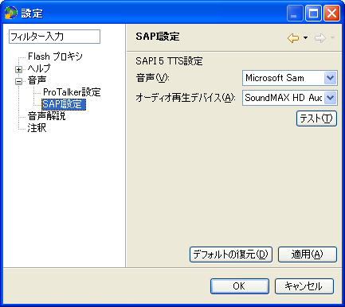

目次に戻る
設定について
各設定を行うには、ウィンドウ・メニューから 「設定」 を選択して設定ダイアログを開きます。
音声
音声出力の基本設定を行うパネルです。使用する音声合成エンジンの選択と、音声出力速度の設定を行います。
音声合成エンジンごとに異なる設定に関しては、それぞれの音声合成エンジンの設定パネルを利用します。
- TTS エンジン
- 音声合成 (Text-To-Speech) エンジンを選択します。
- JAWS
- JAWS for Windows が aiBrowser 起動時に実行されている場合にのみ選択可能です。
- Window-Eyes
- Window-Eyes が aiBrowser 起動時に実行されている場合にのみ選択可能です。
- ProTalker
- ProTalker OCX (ptocx.exe) がインストールされている場合にのみ選択可能です。 「ProTalker 設定」 へ
- SAPI 5 TTS
- Microsoft® Speech API (SAPI) 5.0 対応の音声合成エンジンを利用する場合に選択します。
「SAPI 設定」 へ
- 速度
- 音声再生の速度を設定します。スライダを左に動かすと遅くなり、右に動かすと速くなります。実際の音声再生速度は、音声合成エンジンによって異なります。
(この設定は JAWS 読み上げ速度には反映されません。JAWS 読み上げ速度を変更する場合は「Ctrl + Alt + PageUp」または「Ctrl + Alt + PageDown」キーを押してください)
- テスト
- 設定した音声再生速度を確認するためのテスト音声を再生します。
TTS エンジンを切り替えた場合は、先に 「適用」 ボタンを選択してから 「テスト」 ボタンを選択してください。
ProTalker 設定
- 音声タイプ
- 「読み秀君」 または 「読み子ちゃん」 を選択します。
- テスト
- 設定を確認するためのテスト音声を再生します。
SAPI設定
aiBrowser には、Microsoft® Speech API (SAPI) 5.0 対応の音声合成エンジンを利用して音声出力を行う機能が含まれています。
日本語音声合成エンジンは aiBrowser には含まれていませんので別途入手してください。
音声出力を行うオーディオ再生デバイスを外部 USB スピーカ等に切り替えることができます。

- 音声
- 使用する音声の名前を選択します。
- オーディオ再生デバイス
- 音声出力を行うオーディオ再生デバイスを選択します。
- テスト
- 設定を確認するためのテスト音声を再生します。
音声解説
音声解説用の音声設定を行います。
- TTSエンジン
- 音声解説のための TTS エンジンを選択します。
文書の読み上げと異なる TTS エンジンを選択することも可能です。
Flash プロキシ
プロキシの設定を行います。
- HTTP プロキシの適用:
- どの HTTP 通信にプロキシを適用するかを設定します。
- 無し: すべての HTTP 通信にプロキシを適用しません。
このオプションが選択されている場合は、Flash にアクセスしたりコントロールすることはできません。
- このセッションのみ: aiBrowser に関する通信にのみプロキシを適用します。
- システム全体: すべての HTTP 通信に対してプロキシを適用します 。たとえば aiBrowser 以外のブラウザでウェブページを閲覧する場合にも適用されます。
- タイムアウト（秒）
- プロキシ使用時のコネクションタイムアウト時間を、非負の整数で指定します。デフォルト値は30(秒)です。
- 対象となる SWF の最低バージョン
- 非負の整数を指定します。指定したバージョンより古い Flash コンテンツに対しては、通信を可能にするための処理を行いません。デフォルト値は5です。
注意: バージョン5未満のコンテンツでは ActionScript の機能が限られているため、aiBrowser の機能では内部状態を取得することができません。
- インターネットキャッシュの削除
- Flash コンテンツをコントロールするためには、ページを閲覧する前にインターネットキャッシュを削除する必要があります。
ただし、キャッシュを削除するとブラウザのパフォーマンスに影響を与えますので、ここで aiBrowser 起動時にインターネットキャッシュを削除するかどうかを選択します。
- 確認せずに削除する
- aiBrowser 起動時に確認ダイアログを表示せずにキャッシュを削除します。
- 削除する前に確認する
- aiBrowser 起動時にキャッシュを削除するか問い合わせる確認ダイアログが表示されます
- 常に削除しない
- aiBrowser 起動時にキャッシュを削除しません。
この場合、以下のいずれかの手順で明示的にキャッシュを削除する必要があります。
- aiBrowser のメニューから 「ファイル」 > 「インターネットキャッシュを削除」 を選択します
- 次に Internet Explorer で 「ツール」 > 「インターネットオプション」 を選択します。または、システムのコントロールパネルから 「インターネット オプション」 を選択します (ここでの手順は Internet Explorer 6 の場合です)
- 「全般」 タブの中のインターネット一時ファイル項目にある 「ファイルの削除」 ボタンを選択します
- 「[Temporary Internet files] フォルダのすべてのファイルを削除しますか?」 というダイアログが表示されたら、「OK」 ボタンを選択します
- インターネットオプション設定パネルに戻ったら、「OK」 ボタンを選択して閉じます
注釈
注釈機能の設定を行います。
- 自動的に注釈を保存する
- このチェックボックスをオンにすると、注釈やしおりの変更が自動的に保存されます。
注釈を手動で保存するには、このチェックボックスをオフにして、保存したいタイミングで 「Ctrl + Alt + S」 キーを押します。
目次に戻る